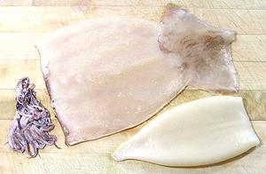
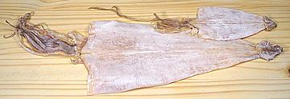
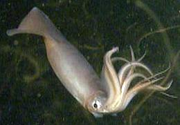

SAFARI
Users
- General & History
- Varieties
- Cleaning, Cutting & Cooking Small Squid
- Cleaning, Cutting & Cooking Large Squid
- Health & Nutrition
General & History
Squid are Cephalopod mollusks (Cephalopoda) and related to Octopi but only at the Subclass level (Coleoidea) so it's not real close. They became a distinct line from other Cephalopods about 400 million years ago.
Squid is a favored seafood in Italy, Southeast Asia, and other countries with long coastlines, but has never been that popular with Americans. Once scarce, it can now be easily found in markets serving Philippine and other Southeast Asian communities.
Squid contain a sack of black ink which they use to create a screen when escaping from predators. In Italy the ink is used to dye pasta black, and it is used in Spain as a dye in some recipes. In North America the ink sack is usually removed before marketing, but you can get this ink from emporia selling Spanish food items.
Varieties
In North America, squid are not marketed by variety, only by size. That limits you to choosing (by size) fresh, dried, or otherwise prepared.
Fresh Squid
Most "fresh" squid have been previously frozen to preserve their freshness during distribution, but that does no damage. Pictured at the top of this page are medium and "jumbo" squid typical of those found in Asian markets in Southern California. The "jumbo" size can be up to 2-1/2 pounds but averages about 1-3/4 pounds. Bodies (exclusive of head and tentacles) run between 9 and 13 inches long. Fresh raw squid can be ordered in sushi bars as "ika" and is one of my favorites.
Frozen Squid
 Frozen squid can be found in regular North American markets in two forms: rings (small squid) and calamari steaks (large squid). The larger Asian markets here in Los Angeles also have whole cleaned and skinned squid bodies and tentacles, which may be packaged together or separately.
All sizes of squid tubes, from 2 inch to 10 inch, are available,
cleaned, sometimes bleached, and sometimes scalded, Thaw and treat as
fresh squid with very brief cooking or a long simmer. The photo shows
a 10 inch squid body, split and flattened, a 6 inch squid body left as
a tube, but with fins removed, and a pile of tentacles from very small
squid.
Dried Squid
 Dried squid can be found in practically any market serving an East or Southeast Asian community - it's a popular snack just chewed on as is. Shown in the photo are sizes "XL" (15 inch body) and "M" (7 inch body). Back in the '60s these would be piled in bins and barrels in Chinatown, but today they are mostly in plastic bags and refrigerated.
Humboldt Squid
 [Jumbo Squid, Jumbo Flying Squid; Pota, Diablo Rojo (Spanish); Dosidicus gigas]
This is the largest of the edible squid, growing to nearly 5 feet long and a weight of 110 pounds. It is not yet well known in North America, because its range was only between Peru and central Mexico. For reasons not yet known, it has recently expanded its range from the southern tip of Chile to Alaska. This is of great concern to coastal fisheries because the Humboldt Squid is a voracious predator that only Sperm Whales and very large fish like Swordfish are able to prey upon. LIke the Giant Squid, and unlike smaller squid, their sucker disks are lined with sharp, hooked teeth
These squid are judged to be at least as intelligent as dogs.
They communicate with each other by rapidly changing skin colors and
patterns, but what they are communicating is still unknown. There have
long been fisheries for this squid in Peru and southern Mexico, but
now in Chile, and a sports fishery in Southern California. More will
doubtless be established as the squid continues to expand its range
and population, and good harvests will be needed to keep them from
eating all the fish. This squid is large enough to produce Calamari
Steaks, which are often exported from South Ameica.
Cleaning, Cutting & Cooking Squid.
Health & Nutrition
Squid is very high in selenium and high in phosphorus, riboflavin and vitamin B12.
Squid is high in cholesterol. That was once a big scare, but it is now known the body manufactures most of its own cholesterol and dietary cholesterol has little effect for most people. In fact, populations that eat large amounts of high cholesterol shrimp and squid tend to have a low incidence of coronary disease. Eating too little cholesterol is now suspected of having negative effects on health.